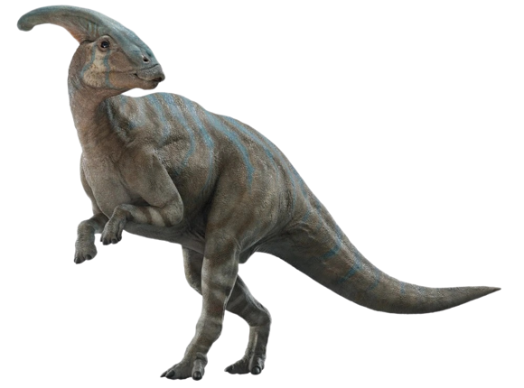

TRICERATOPS
Triceratops is a genus of chasmosaurine ceratopsian dinosaur that lived during the late Maastrichtian age of the Late Cretaceous period, about 68 to 66 million years ago in what is now western North. Triceratops is one of the most well-known and iconic dinosaurs, characterized by its large size and distinctive features. Triceratops belongs to the family Ceratopsidae, which includes other horned dinosaurs.
TYRANNOSAURUS
Tyrannosaurus, often referred to as T. rex, is one of the most famous and well-known genera of dinosaurs. It was a large, carnivorous dinosaur that lived during the Late Cretaceous period, approximately 68 to 66 million years ago. T. rex is often considered one of the apex predators of its time and is famous for its large size and powerful jaws.
STEGOSAURUS
Stegosaurus is a genus of herbivorous dinosaur that lived during the Late Jurassic period, around 155 to 150 million years ago. It was a quadrupedal dinosaur known for its distinctive features, including a row of large, bony plates along its back and a double row of sharp, pointed spikes on its tail. These plates and spikes were likely used for defense against predators and possibly for display or temperature regulation.
ALLOSAURUS
Allosaurus is a genus of theropod dinosaur that lived during the Late Jurassic period, approximately 155 to 150 million years ago. It was a large carnivorous dinosaur that roamed what is now North America, Europe, and possibly parts of Africa. Allosaurus was one of the top predators of its time and is known for its large size, powerful jaws filled with serrated teeth, and its bipedal stance.
ALBERTOSAURUS
Albertosaurus is a genus of theropod dinosaur that lived during the Late Cretaceous period, approximately 70 to 73 million years ago. These dinosaurs were members of the Tyrannosauridae family and were closely related to the more famous Tyrannosaurus rex. Albertosaurus was a carnivorous predator and one of the top predators of its time in North America.
BARYONYX
Baryonyx is a genus of theropod dinosaur that lived approximately 130 to 125 million years ago during the Early Cretaceous period. The name "Baryonyx" means "heavy claw," referring to its large, curved claws. This dinosaur belongs to the spinosaurid group, which includes other large, carnivorous dinosaurs characterized by their long, crocodile-like snouts.
DEINONYCHUS
Deinonychus is a genus of theropod dinosaur that lived during the Early Cretaceous period, around 115 to 108 million years ago. The name Deinonychus, which means "terrible claw" in Greek, is derived from its distinctive large, curved talon on each hind foot. These claws were likely used as a predatory tool, allowing Deinonychus to grasp and immobilize its prey.
DILOPHOSAURUS
Dilophosaurus is a genus of theropod dinosaur that lived during the Early Jurassic period, around 193 million years ago. The name "Dilophosaurus" is derived from the Greek words "di," meaning two, and "lophos," meaning crest, referring to the double crests on the top of its skull.
SPINOSAURUS
Spinosaurus is a genus of theropod dinosaur that lived during the Cretaceous period, approximately 112 to 93 million years ago. The name "Spinosaurus" means "spine lizard," which refers to the distinctive sail-like structure on its back, formed by elongated neural spines. This dinosaur is known for being one of the largest carnivorous dinosaurs, possibly even larger than Tyrannosaurus rex.
PACHYCEPHALOSAURUS
Pachycephalosaurus is a genus of herbivorous dinosaur that lived during the Late Cretaceous period, around 70-65 million years ago. The name Pachycephalosaurus means "thick-headed lizard," which is fitting because of its distinctive dome-shaped skull. This dinosaur belonged to the family Pachycephalosauridae, and its fossils have been found in North America, primarily in the western United States and Canada.
PARASAUROLOPHUS
Parasaurolophus is a genus of herbivorous dinosaur that lived during the Late Cretaceous period, approximately 76.5 to 73 million years ago. It belonged to the hadrosaurid family, commonly known as duck-billed dinosaurs. The name "Parasaurolophus" is derived from Greek words meaning "near crested lizard," referring to its distinctive head crest.
AMARGASAURUS
Amargasaurus is a genus of dinosaur that lived during the Late Cretaceous period, approximately 94 million years ago. It belongs to the family Dicraeosauridae, a group of long-necked, herbivorous dinosaurs known as sauropods. The name "Amargasaurus" is derived from the La Amarga Formation in Argentina, where its fossils were first discovered in 1984.
Velociraptor
Velociraptor is a genus of small, feathered theropod dinosaurs that lived approximately 75 to 71 million years ago during the Late Cretaceous period. These dinosaurs belonged to the family Dromaeosauridae and were characterized by their distinctive features, including a relatively large ain for their size, a long, stiff tail, and a sickle-shaped retractable claw on each hind foot.
RAPTOR
The term "raptor" in the context of dinosaurs typically refers to a group of theropod dinosaurs that are characterized by their bird-like features and predatory adaptations. The most famous member of this group is the Velociraptor, which gained widespread recognition through movies like "Jurassic Park." It's important to note that the term "raptor" itself is not a scientific classification but rather a popularized term.
COMPSOGNATHUS
Compsognathus is a genus of small, bipedal theropod dinosaur that lived during the Late Jurassic period approximately 150 million years ago. The name "Compsognathus" is derived from the Greek words "compsos," meaning "elegant," and "gnathos," meaning "jaw." It is often referred to as a "compy."